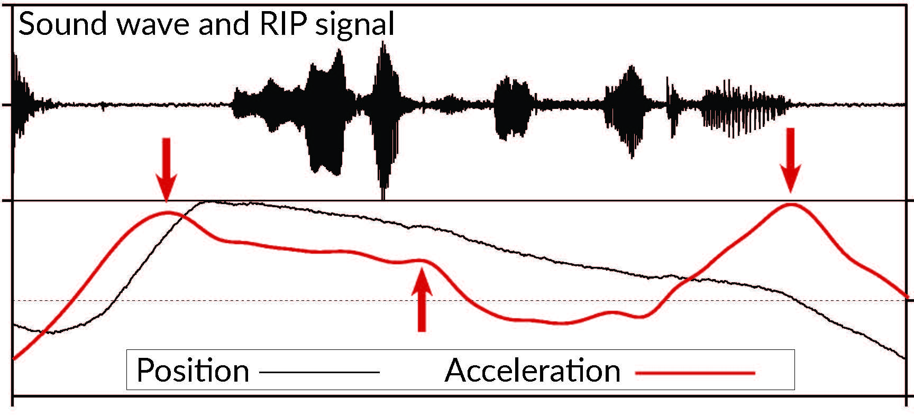

<!DOCTYPE html>
<html lang="en">
<head>
  <meta charset="UTF-8" />
  <meta name="viewport" content="width=device-width, initial-scale=1" />
  <title>Malin Svensson – Portfolio</title>
 <meta name="description" content="Speech scientist exploring articulation, prosody, and AI – turning phonetic insight into human-centered technology.">
 <meta name="description" lang="sv" content="Forskare i fonetik och talteknologi – utforskar artikulation, prosodi och AI för att skapa mer mänsklig talteknologi.">
<meta name="keywords" content="phonetics, speech science, ASR, TTS, prosody, articulation, speech technology, AI, Sweden, Malin Svensson">
  <link rel="preconnect" href="https://fonts.googleapis.com">
  <link href="https://fonts.googleapis.com/css2?family=Raleway:wght@400;700&display=swap" rel="stylesheet">
  <link rel="preconnect" href="https://fonts.gstatic.com" crossorigin>
  <link href="https://fonts.googleapis.com/css2?family=Inter:wght@300;400;600;800&family=Playfair+Display:wght@600;700&display=swap" rel="stylesheet">
  <style>
    :root{
      --bg:#0b0b0c;
      --text:#e7e7ea;
      --muted:#a9a9b3;
      --card:#141418;
      --accent:#7c9cff;
      --accent-2:#ff8ab5;
      --radius:16px;
      --shadow:0 10px 30px rgba(0,0,0,.35);
    }
    *{box-sizing:border-box}
    html{scroll-behavior:smooth}
    body{margin:0;font-family:Inter,system-ui,-apple-system,Segoe UI,Roboto,Arial,sans-serif;background:white;
color:#111;line-height:1.6}

    .hero{
      text-align:center;padding:96px 20px 72px;
      background: radial-gradient(1200px 600px at 50% -20%, rgba(124,156,255,.25), transparent 60%),
                  radial-gradient(900px 600px at 100% 0%, rgba(255,138,181,.18), transparent 55%),
                  linear-gradient(180deg, #101015 0%, #0b0b0c 100%);
      border-bottom:1px solid rgba(255,255,255,.06);
    }
    /*.hero h1{font-family:"Playfair Display"; font-weight:700; font-size: clamp(32px, 5vw, 56px); margin:0 0 12px;}*/
   /*.hero h1 {font-family: 'Raleway', sans-serif; font-weight: 800; letter-spacing: 1px; font-size: clamp(34px, 5vw, 60px); margin: 0 0 8px; color: #d2b48c; text-transform: uppercase;}*/
    .hero h1 {font-family: 'Raleway', sans-serif;font-weight: 900; etter-spacing: 1px; font-size: clamp(34px, 5vw, 60px); margin: 0 0 8px; color: #e0c097;}


    .hero p{max-width:900px;margin:0 auto;color:var(--muted);font-size:clamp(16px, 2vw, 18px)}


  body {
    margin: 0;
    font-family: Inter, sans-serif;
    background: white;
    color: #111;
    line-height: 1.7;
    
  }

  .hero{
  text-align:center;
  padding:96px 20px 72px;
  background:white;
  border-bottom:1px solid #ddd;
}

  .hero h1 {
  font-family: 'Raleway', sans-serif;
  font-weight: 900;
  font-size: clamp(48px, 8vw, 110px);
  margin: 0 0 8px;
  color: #111;
}
    .funding-link{
  text-align:center;
  margin-top:20px;
  color:#666;
  font-size:.95rem;
}

.funding-link a{
  color:#2563eb;
  text-decoration:none;
}

.funding-link a:hover{
  text-decoration:underline;
}

  .hero p {
    max-width: 700px;
    margin: auto;
    color: #555;
  }
    .subtitle{
  margin-top:20px;
  color:#555;
  font-size:1.1rem;
}

.hosts{
  margin-top:24px;
  color:#777;
  line-height:1.7;
}

.hero-image{
  display:block;
  width:60%;
  max-width:700px;
  margin:40px auto;
  border-radius:16px;
}

  .container {
    max-width: 950px;
    margin: auto;
    padding: 40px 20px;
  }

  img.hero-image {
    width: 50%;
    border-radius: 16px;
    margin: 30px auto;
  }

    html {
  scroll-behavior: smooth;
  scroll-padding-top: 120px;
}

  .tabs {
    display: flex;
    gap: 12px;
    margin-top: 40px;
    margin-bottom: 20px;
    flex-wrap: wrap;
  }

  .tab {
  font-size: 1.1rem;
  font-weight: 700;
  margin-right: 24px;
}
.project-nav {
  display: flex;
  justify-content: flex-end;
  gap: 32px;
  padding: 20px 60px;
  position: sticky;
  top: 0;
  background: white;
  z-index: 100;
  border-bottom: 1px solid #ddd;
}

.project-nav a {
  text-decoration: none;
  font-weight: 700;
  color: #111;
}

.project-nav a:hover {
  opacity: 0.6;
}

.wp1 { color: #2563eb; }   /* blå */
.wp2 { color: #16a34a; }   /* grön */
.wp3 { color: #991b1b; }   /* djup röd */

  .card {
    background: #f7f7f7;
    padding: 24px;
    border-radius: 16px;
    margin-bottom: 20px;
  }

  h2 {
    margin-top: 50px;
  }

  ul {
    padding-left: 20px;
  }

 .project-nav {
  display: flex;
  justify-content: flex-end;
  gap: 32px;
  padding: 20px 60px;
  position: sticky;
  top: 0;
  background: white;
  z-index: 100;
  border-bottom: 1px solid #ddd;
}

.project-nav a {
  text-decoration: none;
  font-weight: 700;
  color: black;
}

.project-nav a:hover {
  opacity: 0.6;
}

   
  </style>
</head>
</html>
<body>


  <header class="hero">

  <h1>TEMPOS</h1>

  <p class="longtitle">
    Temporal Precision in Speech – Unveiling the Physiology of Prosodic Structure
  
  </p>

</header>
  
<nav class="project-nav">
  <a href="#overview">Overview</a>
  <a href="#wp1" class="wp1">WP1</a>
  <a href="#wp2" class="wp2">WP2</a>
  <a href="#wp3" class="wp3">WP3</a>
  <a href="#news">News</a>
</nav>
 


<div class="container">

  

    <h2 id="overview">About the project</h2>
   <p>
  
   TEMPOS explores how speech rhythm emerges through interactions between breathing,
    posture, articulation and acoustics.<br><br>
    TEMPOS is a Marie Skłodowska-Curie Postdoctoral Fellowship (MSCA PF)
  led by Malin Svensson Lundmark.<br>
     
     

   
   
   It is coordinated by Humboldt-Universität zu Berlin
  in collaboration with Université Grenoble Alpes. 
   </p>

  
 
  <p class="hosts">
 Principal investigator: Malin Svensson Lundmark<br>
   Hosts: Humboldt-Universität zu Berlin (Christine Mooshammer) <br> Secondment: Université Grenoble Alpes (Takayuki Ito)
    <br> 
</p>
 <p class="funding-link">
  
     Funded by the European Union →
  <a href="https://cordis.europa.eu/project/id/101284448" target="_blank">
    Project details on Horizon Europe
  </a>
</p>
      
  
</p>
  </p>


  <div class="card">
      <h2 id="wp1" class="wp1">WP1 – Breath & Timing</h2>

    <p>
      Co-dependency of breathing cycle and syllable strength.
            <br><br> This work will determine how breathing and syllable prominence co-depend across exhalation, 
      and how they interact across three languages, as well as in second-language speech.
    </p>
  </div>

  <div class="card">
      <h2 id="wp2" class="wp2">WP2 – Posture & Rhythm</h2>


    <p>
      Posture stability during strong/weak syllables.
      <br><br> This work package will take place at Université Grenoble Alpes, where we will test posture stability and rhythm control under perturbation.
    </p>
  </div>

  <div class="card">
         <h2 id="wp3" class="wp3">WP3 – Body & Sound</h2>
    <p>
      Articulatory-acoustic mapping for explainable speech technology.
      
    </p>
  </div>

<h2 id="news">News</h2>
  <ul>
    <li>July 2026 – Project started</li>
    <li>22–23 July 2026 – EMA workshop in Bielefeld</li>
  </ul>

</div>


   
